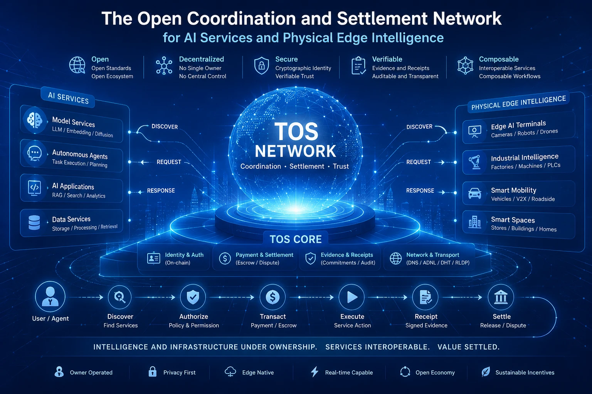

Demand shift
From users clicking to agents transacting
Autonomous software needs persistent identity, delegated authority, explicit budgets, task state, and machine-verifiable receipts.
TOS Network is building the open coordination and settlement network for autonomous agents, owner-operated AI services, and site-bound physical intelligence.
Providers keep their hardware, models, data, and operating control. TOS standardizes how services are discovered, authorized, evidenced, composed, and paid across organizational boundaries.
A structural market transition
The next AI market is not one application or one cloud. It is a fragmented universe of agents, models, sensors, machines, data, and human expertise. TOS is designed to turn that fragmentation into an open service economy.
Demand shift
Autonomous software needs persistent identity, delegated authority, explicit budgets, task state, and machine-verifiable receipts.
Supply shift
AI services are spreading across workstations, edge servers, factories, vehicles, robots, cameras, stores, and homes.
Value shift
The durable market unit is a completed, policy-compliant service action—not an hour of unidentified GPU capacity.
What TOS coordinates
A client asks for a capability under explicit price, latency, privacy, region, and evidence constraints. A provider decides whether to admit it. TOS binds the request to authority, proof, and settlement.
Resolve identity, capability, policy, and endpoint.
Bind a quote to permissions, budget, and limits.
Run an approved service under local admission policy.
Return signed results, metering, and evidence references.
Release, refund, or dispute according to agreed policy.
Consumers buy a defined capability and result. TOS does not expose raw accelerators, public shells, or arbitrary execution.
Providers retain custody of hardware, data, models, availability, pricing, and operational policy.
Controller keys, spending limits, quotes, deadlines, and revocation constrain what autonomous software may do.
Signed records connect service actions to accounting and settlement without putting private payloads on-chain.
One network, two frontiers
Coordination, settlement, and trust sit between independently owned supply and global demand.

The Physical AI wedge
A terminal beside a camera, robot, vehicle, or production line can execute where remote clouds face latency, bandwidth, privacy, connectivity, or safety constraints.
TOS treats these devices as site-bound service terminals—not miniature GPU clouds. Local real-time work and independent safety controls always outrank external network tasks.
Read the Physical AI architectureApproved local workloads continue offline with bounded authority and idempotent reconciliation after reconnect.
Safety interlocks, control deadlines, and local perception pre-empt external services and background jobs.
Signed artifacts, compatibility gates, staged rollout rings, health checks, and known-good rollback protect fleets.
No public shell, raw actuator, Docker socket, or unrestricted host access. Every queue and resource has a bound.
Why the network can compound
TOS is designed around cumulative interoperability rather than rewards for idle hardware. More compatible services improve choice. More demand improves provider utilization. More signed receipts create better operational evidence. Shared conformance lowers integration cost across devices, models, sites, and industries.
Capital structure
Expansion logic
Defensibility
Execution credibility
The blockchain and networking foundation exists in open source today. The service protocol and terminal product layers are intentionally separated and explicitly identified as the next delivery surface.
.tos registration and plural service discoveryFocused delivery
No phase introduces bare GPU rental, arbitrary consumer execution, or blockchain control of physical safety systems.
Identity, manifests, authentication, quotes, payment, receipts, evidence, discovery schema, SDKs, and conformance.
Tier 1 Linux/NVIDIA reference, approved models, bounded scheduling, streaming, metering, receipts, and restart recovery.
Jetson/ARM reference, offline operation, safe updates, real-time priority, actuator isolation, and fleet management.
Storage, commerce, tools, human services, relays, channels, multi-region routing, replication, and stronger attestation.
Underwrite the work, not the adjectives
TOS does not ask serious investors to confuse vision with deployment. Start with the source, inspect the current foundation, then evaluate whether the service and terminal roadmap can turn it into a category-defining network.
Investment questions
No. TOS is designed around policy-bound service outcomes. The provider exposes an approved capability, not a raw accelerator, public shell, or arbitrary execution environment.
Physical AI creates services whose value comes from location, local data, privacy, and real-time execution. Those advantages cannot always be replicated by moving the workload to a remote centralized cloud.
TOS Core exists in open source: actor execution, consensus, sharding, networking, wallets, query foundations, and service-oriented contracts. The interoperable service protocol, discovery product, and edge terminals remain planned product work.
Compatible supply improves discovery and composition; demand improves utilization; signed receipts improve operational evidence; shared standards reduce the cost of adding the next model, device, site, or service profile.
No. Service transaction volume, validator fees, protocol revenue, and token value accrual are distinct. The project publishes architecture and delivery objectives, not investment-return promises.
The opportunity
Open identity. Bounded authority. Verifiable service actions. Native settlement.